Introdução à unidade
Nesta unidade, o estudo dos conceitos geométricos é ampliado, explorando-se o cálculo da soma dos ângulos internos e externos de um polígono e calculando-se o número de suas diagonais.
A seguir, relacionamos os objetivos que se pretende atingir ao estudar os conceitos desta unidade.
Capítulo 1 – Ângulos de um polígono
Objetivos:
- Desenvolver a fórmula da soma dos ângulos internos de um polígono, por meio da experimentação prática, partindo de um triângulo.
- Utilizar a fórmula da soma dos ângulos internos de um polígono para encontrar medidas desconhecidas de algum ângulo.
- Resolver situações-problema que envolvam a soma dos ângulos internos de um polígono.
- Encontrar a fórmula da soma dos ângulos externos de um polígono.
- Utilizar a fórmula da soma dos ângulos externos de um polígono para encontrar medidas desconhecidas de algum ângulo.
- Resolver situações-problema que envolvam a soma dos ângulos externos.
Capítulo 2 – Número de diagonais de um polígono
Objetivos:
- Determinar a quantidade de diagonais em um polígono, por meio do uso da fórmula.
- Descobrir o polígono correspondente, por meio da quantidade de diagonais que ele possui, utilizando a fórmula.
Probabilidade e estatística –Medidas de tendência central e de dispersão
Objetivo:
- Calcular a moda, mediana, média, amplitude e desvio.
Orientações específicas
A unidade inicia com a exploração de situações em que se percebe o uso de figuras geométricas no revestimento de determinados pisos. O objetivo é gerar uma discussão entre os alunos sobre quais figuras geométricas são as mais utilizadas para revestir superfícies e os motivos dessa escolha.
Podemos identificar pisos em que foram usadas formas geométricas como triângulos, retângulos, quadrados e hexágonos, porém, em nenhum caso há, por exemplo, somente pentágonos regulares, o que se deve à medida do ângulo interno desses polígonos. Caso sejam usados pentágonos regulares, há necessidade de fazer uma combinação com outros polígonos.

Converse
Atividade 1
Quadrada, retangular, triangular e hexagonal.
Atividade 2
Porque elas se encaixam perfeitamente. Se utilizássemos somente pentágonos, por exemplo, este encaixe já não seria possível, sem que um sobrepusesse o outro.
|
Principais habilidades da BNCC |
EF08MA14 |
|
Competências |
CE3, CE8, CG9 |
Proponha aos alunos que construam um quadro relacionando o número de lados, o número de triângulos possíveis de serem formados a partir de um único vértice e a soma das medidas dos ângulos internos de cada polígono para que cheguem à fórmula
Si = (n − 2) ∙ 180°.
|
Nome do polígono |
Número de lados |
Número de triângulos formados |
Soma dos ângulos internos |
|
Triângulo |
3 |
1 |
180° |
|
Quadrilátero |
4 |
2 |
2 ∙ 180° = 360° |
|
Pentágono |
5 |
3 |
3 ∙ 180° = 540° |
|
Hexágono |
6 |
4 |
4 ∙ 180° = 720° |
|
Heptágono |
7 |
5 |
5 ∙ 180° = 900° |
|
Octógono |
8 |
6 |
6 ∙ 180° = 1 080° |
|
Eneágono |
9 |
7 |
7 ∙ 180° = 1 260° |
|
Decágono |
10 |
8 |
8 ∙ 180° = 1 440° |
|
Dodecágono |
12 |
10 |
10 ∙ 180° = 1 800° |
|
Icoságono |
20 |
18 |
18 ∙ 180° = 3 240° |
Para cada um dos polígonos regulares, pode-se ainda calcular a medida de cada ângulo interno, dividindo a soma dos ângulos internos pelo número n de lados do polígono, visto que a quantidade de ângulos internos é igual ao número de lados.
Como sugestão, realize um trabalho com mosaicos, utilizando diferentes figuras geométricas. Os alunos podem construir mosaicos ou faixas decorativas em malhas quadriculadas ou triangulares.


Comente com os alunos que em um polígono regular qualquer, todos os ângulos internos ai são congruentes entre si. Portanto, para encontrar a medida de cada ângulo interno, basta dividir a soma das medidas dos ângulos internos Si pelo número n de lados.
Após a explicação faça perguntas relacionadas a outros polígonos, por exemplo:
Quanto vale a soma dos ângulos internos de um dodecágono?
Si = 1 800°
Faça também o contrário, apresente a soma e solicite que descubram de qual polígono se trata, por exemplo:
Qual polígono tem a soma dos ângulos internos igual a 3 240º?
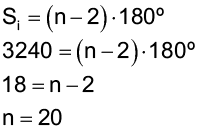
O polígono é um icoságono.

Encontre soluções
Atividade 2
- Si = (n - 2) ∙ 180°
Si = (6 - 2) ∙ 180°
Si = 720°
ai = 720° : 6 = 120°
- Si = (n - 2) ∙ 180°
Si = (8 - 2) ∙ 180°
Si = 1 080°
ai = 1 080° : 8 = 135°
- Si = (n - 2) ⋅ 180°
Si = (9 - 2) ⋅ 180°
Si = 1 260°
ai = 1 260° : 9 = 140°
Atividade 3
- Si = (n − 2) ∙ 180°
1 800° = 180°n − 360°
180°n = 1 800° + 360°
180°n = 2 160°
n = 12. Dodecágono.
- Si = (n - 2) ∙ 180°
3 240° = 180°n − 360°
180°n = 3 240° + 360°
180°n = 3 600°
n = 20. Icoságono.
Atividade 4
- Si = (n − 2) ∙ 180°
Si = (13 - 2) ∙ 180°
Si = 11 ∙ 180°
Si = 1 980°
- Si = (n - 2) ∙ 180°
Si = (17 - 2) ∙ 180°
Si = 15 ∙ 180°
Si = 2 700°
Atividade 5
- Si = (n − 2) ∙ 180°
Si = (5 - 2) ∙ 180°
Si = 3 ∙ 180°
Si = 540°
2x + 90° + 90° + 90° = 540°
x = 135°
- Si = (n - 2) ∙ 180°
Si = (6 - 2) ∙ 180°
Si = 4 ∙ 180°
Si = 720°
10x = 720°. x = 72°
Os ângulos medem 72º, 144º, 144º, 72º, 144º e 144º.
Atividade 6
Si = 160°n
Si = (n − 2) ∙ 180°
160°n = 180°n − 360°
180°n − 160°n = 360°
20°n = 360°
n = 18
Atividade 7
- Si = (n − 2) ∙ 180°
Si = (5 − 2) ∙ 180°
Si = 3 ∙ 180°, Si = 540°
ai = 540° : 5 = 108°
108° + 108° + x = 360°
x = 360° − 108° − 108°. x = 144°
144° + 144° + y + y = 360°
2y = 360° − 288°
2y = 72°, y = 36°
Pentágono: 108°. Quadrilátero: 36° e 144°.
- Si = (n − 2) ∙ 180°
Si = (6 − 2) ∙ 180°
Si = 4 ∙ 180°
Si = 720°
ai = 720° : 6 = 120°
120° + 120° + x = 360°
x = 360° − 240°. x = 120°
120° + 120° + y + y = 360°
2y = 360° − 240°
2y = 120°. y = 60°
Hexágono: 120°.
Quadrilátero: 60° e 120°.
Atividade 8

x + x + 2x = 360°
4x = 360°
x = 90°. Ângulos: 45°, 45° e 90°.
- 3x + x + 4x = 180°
8x = 180°
x = 22° 30’. Ângulos: 22° 30’, 67° 30’ e 90°.
- 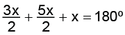
3x + 5x + 2x = 360°
10x = 360°
x = 36°. Ângulos: 36°, 54° e 90°.
Atividade 9
- y + 5y + 2y + 4y = 360°
12y = 360°
y = 30°. Ângulos: 30º, 60°, 120° e 150°.
- 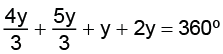
4y + 5y + 3y + 6y = 1 080°
18y = 1 080°
y = 60°. Ângulos: 60°, 80°, 100° e 120°.
- 105° + y + 2y + 3y = 360°
6y = 360° − 105°
6y = 255°
y = 42° 30’. Ângulos: 42° 30’, 85º, 105°, e 127° 30’.
Atividade 10
x + 70º = 180°. x = 110°
y + 30° = 180°. y = 150°
Atividade 11

180° − α + 50° + 30° + 180° − β = 360°
−α − β = 360° − 180° − 180° − 50° − 30°
−α − β = −80°
−(α + β) = −80°
α + β = 80°
Atividade 12

Em um pentágono regular a soma dos ângulos internos é igual a 540º, logo, a medida de cada ângulo interno é igual a 108º.
Observe que o triângulo ΔADE é isósceles, então: 108º + 2x = 180º, onde
x = 36º. Portanto, α = 108º − 36º − 36º = 36º.
Atividade 13

x = 540º − 460º = 80º
Perímetro: 696 m.


Atividade 1
- Tanto a soma das medidas dos ângulos externos do pentágono quanto a do quadrilátero são iguais a 360º. Solicite aos alunos que calculem a soma das medidas dos ângulos externos de um triângulo e um hexágono.
Encontre soluções
Atividade 1
- Octógono: 360° : 8 = 45°.
- Decágono: 360° : 10 = 36°.
- Dodecágono:
360° : 12 = 30°. - Polígono de 18 lados:
360° : 18 = 20°.
Atividade 2
ai = 180° − 24° = 156°
 = 24º
= 24º
n = 15
Pentadecágono.
Atividade 3
Si = (n − 2) ∙ 180°
3 240° = 180°n − 360°
180°n = 3 240° + 360°
180°n = 3 600°
n = 20
Icoságono.
ai = 3 240° : 20 = 162°
ae = 180° − 162° = 18°
Atividade 4
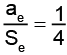

ae = 90°
O polígono é um quadrilátero.
Atividade 5
Como a soma das medidas dos ângulos externos é sempre igual a 360°, este polígono tem 8 ângulos, pois 360° : 45° = 8. No caso, o polígono é um octógono.
Si = (n − 2) ∙ 180°
Si = (8 − 2) ∙ 180°
Si = 6 ∙ 180°
Si = 1 080°
Si − Se = 1 080° − 360° = 720°
Atividade 6
Si = (n − 2) ∙ 180°
Si = (5 − 2) ∙ 180°
Si = 3 ∙ 180°
Si = 540°
ai =  (pentágono)
(pentágono)
ae = 72° (pentágono)
72° + 72° + β = 180°  β = 36°
β = 36°
Atividade 7
Si = (n − 2) ∙ 180°
Si = (8 − 2) ∙ 180°
Si = 6 ∙ 180°
Si = 1 080°
ai = 
ae = 45°
45° + 45° + x = 180°
x = 90° (ângulo da ponta da estrela)
90° ∙ 8 = 720°
Atividade 8
Si = (n − 2) ∙ 180°
Si = (6 − 2) ∙ 180°
Si = 4 ∙ 180°
Si = 720°
ai = 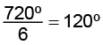
ae = 60°
60° + 40° + x = 180°
x = 80°
Os ângulos internos medem
40°, 60° e 80°.
Atividade 9
Hexágono:
Si = (n − 2) ∙ 180°
Si = (6 − 2) ∙ 180°
Si = 4 ∙ 180°
Si = 720°
ai = 
ai = 120°
Pentágono:
Si = (n − 2) ∙ 180°
Si = (5 − 2) ∙ 180°
Si = 3 ∙ 180°
Si = 540°
ai = 
ai = 108°
120° + 108° + x = 360°
x = 132°

Atividade 10
Si = (n − 2) ∙ 180°
Se = 3 ∙ 360°
Se = 1 080°
1 080° = (n − 2) ⋅ 180°
1 080° = 180°n − 360°
180°n = 1 080° + 360°
180°n = 1 440°
n = 8
Octógono.
Atividade 11
ai = 2ae
ai + ae = 180°
2ae + ae = 180°
3ae = 180°
ae = 60°
n = 360° : 60°
n = 6
Hexágono.
Atividade 12

Si = (n − 2) ∙ 180°
Si = (5 − 2) ∙ 180°
Si = 3 ∙ 180°
Si = 540°
ai =
ae = 180° − 108° = 72°
Como 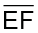 é paralelo a 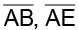 é uma transversal que intersecta dois segmentos paralelos. Portanto, a = 72°, pois ambos os ângulos são correspondentes.

|
Principais habilidades da BNCC |
EF08MA25, EF08MA26, EF08MA27 |
|
Competências |
CE3, CE8, CG9 |
Para o cálculo do número de diagonais de um polígono, proponha aos alunos que, em dupla, sigam as orientações presentes no livro. Caso considere necessário, acrescente, na tabela, outros polígonos, como o eneágono, o decágono, o dodecágono e o icoságono.
Atividade 1
- A diferença entre o número de lados do polígono e o número de diagonais que partem de cada vértice é igual a 3.
- O número de diagonais é sempre igual à metade do produto entre o número de lados e o número de diagonais que partem de cada vértice.

Encontre soluções
Atividade 1
- Octógono.
d =
d = 
d = 20 diagonais.
- Decágono.
d =
d = 
d = 35 diagonais.
- Dodecágono.
d =
d = 
d = 54 diagonais.
- Polígono de 16 lados.
d = 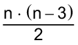
d = 
d = 104 diagonais.
- Polígono de 18 lados
d =
d = 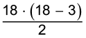
d = 135 diagonais.
- Polígono de 22 lados.
d =
d = 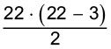
d = 209 diagonais.
Atividade 2
n =
2n = n ⋅ (n − 3)
 = n − 3
= n − 3
2 = n − 3
n = 2 + 3
n = 5
Pentágono.
Atividade 3
d =
d = 
d = 170 diagonais.
Atividade 4
Si = (n − 2) ∙ 180°
2 160° = (n − 2) ∙ 180°
2 160° = 180°n − 360°
180°n = 2 160° + 360°
180º n = 2 520º
n = 14
d =
d = 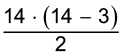
d = 77 diagonais.
Atividade 5
d = 4n
d = 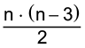
4n =
8n = n2 − 3n
n2 − 3n − 8n = 0
n2 − 11n = 0
n(n − 11) = 0
n = 11 ou n = 0.
Em um produto igual a zero, obrigatoriamente um dos fatores deve ser zero. Neste caso, n não pode ser igual a zero, logo n = 11.
O polígono tem 11 lados.
Atividade 6
Heptágono:
d = 
d = 
d = 14 diagonais.
Octógono:
d =
d = 
d = 20 diagonais.
Soma: 14 + 20 = 34.
Atividade 7
n = 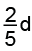
d = 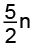
d =
 =
=
5n = n2 − 3n
n2 − 3n - 5n = 0
n2 − 8n = 0
n(n - 8) = 0
n = 0 ou n = 8
Em um produto igual a zero, um dos fatores obrigatoriamente deve ser zero. Usando a fatoração e esta propriedade, verifica-se que o polígono é um octógono.
Atividade 8
Pentadecágono, pois
n − 3 = 12 → n = 15.
d =
d = 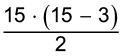
d = 90 diagonais.
Atividade 9
Se = 360°
n = 
n = 18
d =
d = 
d = 135 diagonais.
Atividade 10
d =
d =
d = 14 diagonais.
n − 3 = 14 → n = 17
Polígono regular de 17 lados.
Atividade 11
- 5 triângulos.
- Si = (n - 2) ∙ 180°
Si = (7 - 2) ∙ 180°
Si = 5 ∙ 180°
Si = 900°
- d =
d =
d = 14 diagonais.


Probabilidade e estatística – Medidas de tendência central e de dispersão
Durante a explicação do conteúdo, comente com os alunos que as medidas de tendência central têm como objetivo determinar um valor que represente todos os valores, sem ter que listá-los um a um. Na atividade proposta, dê o tempo suficiente para que os alunos possam realizar a atividade que foi solicitada e depois faça a correção coletivamente, compartilhando e discutindo as respostas dos alunos.

Comente com os alunos que a amplitude térmica em algumas regiões do Brasil é alta e pode ser considerada diariamente, mensalmente, por estação, anual, etc. A amplitude térmica varia de acordo com os diferentes tipos climáticos existentes no planeta. Por exemplo, o clima mediterrâneo chega a ter 30° C de amplitude térmica anual enquanto no clima equatorial pode ter apenas 5° de amplitude térmica.
Proponha aos alunos um levantamento das temperaturas máximas e mínimas de um local durante um determinado período e que calculem a amplitude térmica.

Acervo da Editora
Relembre
Atividade 1
Si = (n − 2) ∙ 180°
Si = (7 - 2) ∙ 180°
Si = 5 ∙ 180°
Si = 900°
Atividade 2
x = y + 12°
z = x + 36° = y + 12° + 36° =
= y + 48°
y + y + 12° + y + 48° = 180°
3y = 180° − 60°
y = 40°
As medidas x, y e z valem, respectivamente, 52°, 40° e 88°.
Atividade 3
Polígono de 13 lados:
Si = (n - 2) ∙ 180°
Si = (13 - 2) ∙ 180°
Si = 11 ∙ 180°
Si = 1 980°
Icoságono:
Si = (n - 2) ∙ 180°
Si = (20 - 2) ∙ 180°
Si = 18 ∙ 180°
Si = 3 240°
Diferença:
3 240° − 1 980° = 1 260°
Atividade 4
Si = (n − 2) ∙ 180°
Si = (4 - 2) ∙ 180°
Si = 2 ∙ 180°
Si = 360°
Atividade 5

360º = (n - 2) ∙ 180º
2 = n - 2
n = 4
Quadrilátero.
Atividade 6
Si = (n − 2) ∙ 180°
Si = (12 - 2) ∙ 180°
Si = 10 ∙ 180°
Si = 1 800°
ai = 1 800° : 12 = 150°
ae = 180° − 150°
ae = 30°
3 ⋅ ae + 4 ⋅ ai = 3 ⋅ 30° + 4 ⋅ 150° = 90° + 600° = 690°
Atividade 7
d =
d = 
d = 5 diagonais.
Atividade 8
A sequência que não possibilita formar um nó, é: triângulo, triângulo, quadrado, quadrado, quadrado. Pois se adicionarmos as medidas dos ângulos em torno do nó, dará 390º, sobrepondo, desta forma, uma das cerâmicas, tendo em vista que uma volta tem 360º.
Atividade 9
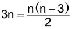
6n = n (n - 3)
6 = n - 3, n = 9
Eneágono.
Atividade 10
n = 360° : 36° = 10
d =
d = 
d = 35 diagonais.
Atividade 11
Si = (n − 2) ∙ 180°
1 080° = (n − 2) ∙ 180°
1 080° = 180°n − 360°
180°n = 1 080° + 360°
180°n = 1 440°
n = 8
d =
d = 
d = 20 diagonais.
Atividade 12
- Falsa. O polígono que tem 5 diagonais é o pentágono.
- Falsa. n = 360° : 40° = 9. O polígono regular em que a medida do ângulo externo é igual a 40° é o eneágono.
- Falsa. A soma das medidas dos ângulos internos de um pentágono é 540°.
- Verdadeira. A medida do ângulo interno de um polígono regular de 12 lados é 150°.
Atividade 13

No desenho, tem-se:
a = 180° − 30° − 20° = 130°
b = 180° − 130° = 50°
c + b + 30° = 180°
c + 50° + 30° = 180°, c = 100°
x = 180° − 100° = 80°
y + a + x + 60° = 360°
y + 130° + 80° + 60° = 360°
y = 360° − 270°, y = 90°
Atividade 14
n = 360° : 20°
n = 18
d =
d = 
d = 135 diagonais
Atividade 15
Para que não haja falha na composição dos ladrilhos, a soma das medidas dos ângulos em torno do vértice comum deve ser 360°. Em um octógono, a medida de cada ângulo interno é igual a 135º. Logo, 135° + 135° = 270°. O único polígono que apresenta ângulo interno igual a 90° é o quadrado.